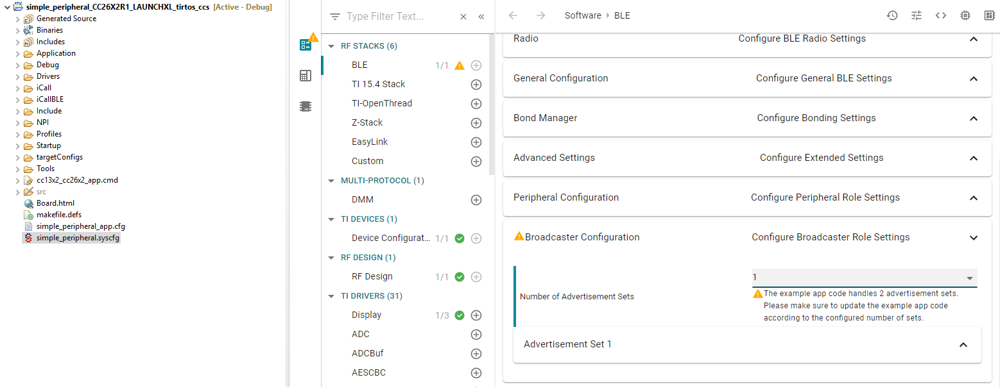
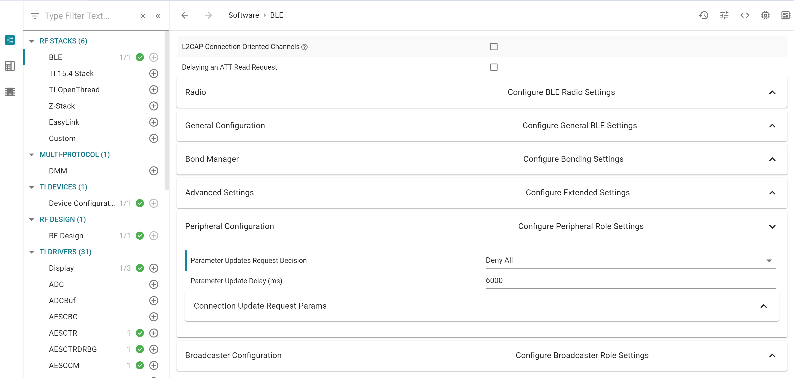
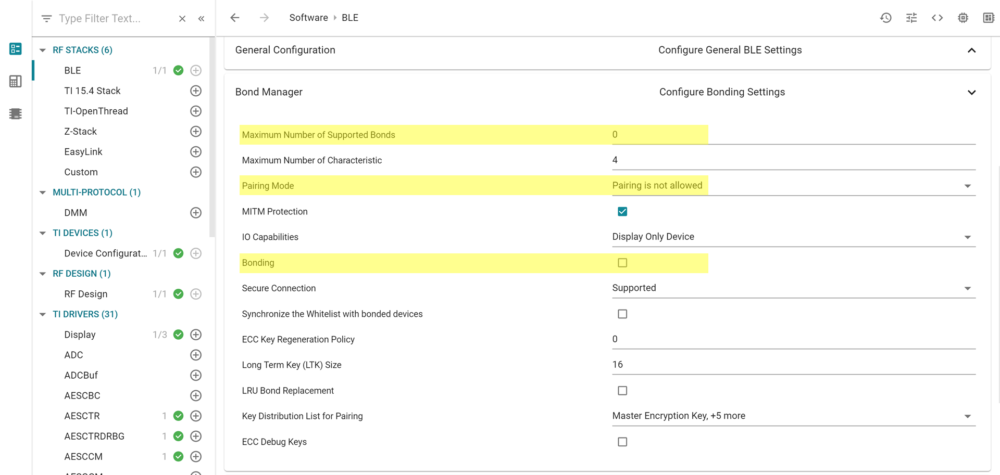
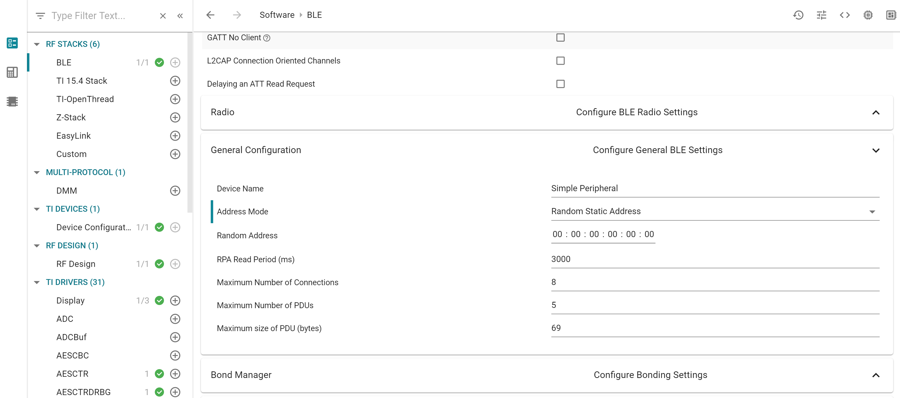

Optimizing Bluetooth Low Energy Stack Memory Usage¶
Configuration of the Bluetooth Low Energy protocol stack is essential for maximizing the amount of RAM and flash memory available for the application. Refer to Stack Configurations to configure parameters that impact runtime RAM usage, such as the maximum allowable size and number of PDUs. The TI Bluetooth Low Energy protocol stack is implemented to use a small RAM footprint, and allow the application to control the behavior of the stack by using the runtime ICall heap. For example, an application that only sends one GATT notification per connection event must store only one PDU in the heap, whereas as an application that must send multiple notifications must enqueue multiple PDUs in the heap.
To increase the available flash memory allocated to the application project, minimize the flash usage of the protocol stack by including only Bluetooth Low Energy features required to implement the defined role of the device. The available protocol stack configurable features are described in Stack Configurations. Adding additional features to the protocol stack has the net effect of reducing the amount of flash memory to the application.
Flash optimization¶
The following tips may be useful for reducing the footprint of the BLE5-Stack. In general, there is a feature vs. flash footprint trade-off. Each of the improvements below offer a cost in terms of feature removal.
Verify that your application uses the optimize for flash size compiler optimization settings (default for TI projects).
Use only one page of SNV.
Remove or exclude debug DISPLAY, Two button menu or other unused drivers from your project.
Use the stack library options defined in
build_config.optto pull in the smallest part possible of the library for the given use case. In general, this means a library that implements only one role (e.g. peripheral) with no additional features enabled (i.e. L2CAP CoC). See Stack Configurations.Remove HAL Asserts by removing the
EXT_HAL_ASSERTdefine
RAM optimization¶
The following tips may be useful for reducing the RAM footprint of the BLE5-Stack. It is important to remember that often removing RAM results in reduced throughput or features, the tradeoffs listed below should be evaluated carefully.
If using L2CAP CoC, reference RAM Considerations for defines that may configure L2CAP CoC functionality and their RAM implications
Set
MAX_NUM_PDUandMAX_PDU_SIZEto reduce the amount of packets that can be queued up by the stack at a time. This will reduce heap consumption.Disable LE Secure Connections pairing if not needed. See LE Secure Connections on how to do this. This will save
ECCROMCC26XX_NIST_P256_WORKZONE_LEN_IN_BYTESduring pairing. Removing LESC also removes the requirement of havingMAX_PDU_SIZEset to 69, this can be overriden inble_user_config.hto as low as 27.The LE Data Length Extension feature will default to an RX size of 251. If the peer device also supports DLE and a
connMaxRxOctetsvalue is negotiated > 27 (default) then the controller will allocate connMaxRxOctets*4. 4 is the number of receive buffers in the controller and is a fixed parameter of the stack. However, connMaxRxOctets can be limited by either disabling Data Length Extension or limiting the max of TX and RX octets. Trimming the values of TX and RX is covered in RAM Considerations when using DLE.Carefully set
MAX_NUM_BLE_CONNS. This define has a large affect on the amount of dynamic memory used by the stack. Below is a list of structures that the stack will alloc on initialization based on number of Connections. Each structure is multiplied byMAX_NUM_BLE_CONNS.sizeof(linkDBItem_t): Link data base entry for each connectionsizeof( l2capChannel_t ): At least one signaling channel for each connectionsizeOfLlConnState: Structure to hold connection statesizeOfAllExtConnParam: Structure to hold connection parameterssizeof(dataQ_t): Each connection’s TX data queuelinkParam_t: Central and Peripheral parameters for each connectionllCte_t: CTE for each connection if RTLS is usedble5OpCmd_t: Radio operation command for connection
Check for heap failures by checking
heapmgrMemFailfrom Debugging Common Heap Issues. If heap failures are occurring, attempt to tune stack build configuration using the features and defines above. See Stack Configurations for options that can be configured in the stack.If heap failures still occur after optimizing the BLE-Stack build, the size of the heap can be increased by reducing the size of static allocation. Static allocation (.bss, .data) includes globally defined buffers, runtime task stacks, and other structures that are instantiated without the use of malloc.
Trim task stack sizes by inspecting them using Task –> Detailed view in TI-RTOS Object Viewer. If there is unused space their size can be decreased.
The system stack can be reduced in a similar way, its usage is shown under HWI –> Module view in ROV. Changing the system stack size is covered in System Stack.
Warning
The above RAM estimations may vary by release, and are not an exhaustive list. It is intended as a way to allow the developer to profile the RAM requirements based on the desired settings. The best way to estimate RAM usage is to measure it in the field using the techniques covered in Debugging Common Heap Issues
See Check System Flash and RAM Usage With Map File for the procedure to check the size of the configured protocol stack.
Decrease flash consumption of the examples project¶
The guidelines provided here are based on the simple_peripheral example but can be adapted to any example.
Remove the #2 (long range) advertisement¶
By removing the secondary advertisement (sometimes called “long range” advertisement) from the simple_peripheral example you can significantly save power. The power consumption due to the secondary advertisement (generally long range advertisement) can represent up to 80% of the power consumption of the advertisement period. In addition, this helps you to save memory.
Here are the guidelines:
Import the simple_peripheral project
Using SysConfig, reduce the number of Advertisement Set to only 1 (this must be done in BLE > Broadcaster Configuration). This will raise a warning saying we need to update the application code… this is what we are going to do now :)
Figure 122. Change the number of advertisement sets of your device¶
Note: It is perfectly normal and expected if the compilation of your project fails after this step… be patient and go to the next steps.
Modify
simple_peripheral.cto remove the code related to the #2 advertisement.remove the declaration of the variable
advHandleLongRangeremove all the code referencing the variable
advHandleLongRangeremove all the code referencing the table
advData2
Here is
simple_peripheral.cdiff file (based on SDK 4.10), click the arrow to see the changes:index b0af31a..4884d0b 100644 @@ -317,7 +317,6 @@ uint8_t autoConnect = AUTOCONNECT_DISABLE; // Advertising handles static uint8 advHandleLegacy; -static uint8 advHandleLongRange; // Address mode static GAP_Addr_Modes_t addrMode = DEFAULT_ADDRESS_MODE; @@ -1053,28 +1052,6 @@ static void SimplePeripheral_processGapMessage(gapEventHdr_t *pMsg) status = GapAdv_enable(advHandleLegacy, GAP_ADV_ENABLE_OPTIONS_USE_MAX , 0); SIMPLEPERIPHERAL_ASSERT(status == SUCCESS); - BLE_LOG_INT_INT(0, BLE_LOG_MODULE_APP, "APP : ---- call GapAdv_create set=%d,%d\n", 1, 0); - // Create Advertisement set #2 and assign handle - status = GapAdv_create(&SimplePeripheral_advCallback, &advParams2, - &advHandleLongRange); - SIMPLEPERIPHERAL_ASSERT(status == SUCCESS); - - // Load advertising data for set #2 that is statically allocated by the app - status = GapAdv_loadByHandle(advHandleLongRange, GAP_ADV_DATA_TYPE_ADV, - sizeof(advData2), advData2); - SIMPLEPERIPHERAL_ASSERT(status == SUCCESS); - - // Set event mask for set #2 - status = GapAdv_setEventMask(advHandleLongRange, - GAP_ADV_EVT_MASK_START_AFTER_ENABLE | - GAP_ADV_EVT_MASK_END_AFTER_DISABLE | - GAP_ADV_EVT_MASK_SET_TERMINATED); - - BLE_LOG_INT_TIME(0, BLE_LOG_MODULE_APP, "APP : ---- GapAdv_enable", 0); - // Enable long range advertising for set #2 - status = GapAdv_enable(advHandleLongRange, GAP_ADV_ENABLE_OPTIONS_USE_MAX , 0); - SIMPLEPERIPHERAL_ASSERT(status == SUCCESS); - // Display device address Display_printf(dispHandle, SP_ROW_IDA, 0, "%s Addr: %s", (addrMode <= ADDRMODE_RANDOM) ? "Dev" : "ID", @@ -1124,12 +1101,10 @@ static void SimplePeripheral_processGapMessage(gapEventHdr_t *pMsg) { // Start advertising since there is room for more connections GapAdv_enable(advHandleLegacy, GAP_ADV_ENABLE_OPTIONS_USE_MAX , 0); - GapAdv_enable(advHandleLongRange, GAP_ADV_ENABLE_OPTIONS_USE_MAX , 0); } else { // Stop advertising since there is no room for more connections - GapAdv_disable(advHandleLongRange); GapAdv_disable(advHandleLegacy); } break; @@ -1161,7 +1136,6 @@ static void SimplePeripheral_processGapMessage(gapEventHdr_t *pMsg) BLE_LOG_INT_STR(0, BLE_LOG_MODULE_APP, "APP : GAP msg: status=%d, opcode=%s\n", 0, "GAP_LINK_TERMINATED_EVENT"); // Start advertising since there is room for more connections GapAdv_enable(advHandleLegacy, GAP_ADV_ENABLE_OPTIONS_USE_MAX , 0); - GapAdv_enable(advHandleLongRange, GAP_ADV_ENABLE_OPTIONS_USE_MAX , 0); // Clear remaining lines Display_clearLine(dispHandle, SP_ROW_CONNECTION); @@ -1822,14 +1796,10 @@ bool SimplePeripheral_doAutoConnect(uint8_t index) { if (autoConnect != AUTOCONNECT_GROUP_A) { - GapAdv_disable(advHandleLongRange); GapAdv_disable(advHandleLegacy); advData1[2] = 'G'; advData1[3] = 'A'; - advData2[2] = 'G'; - advData2[3] = 'A'; GapAdv_enable(advHandleLegacy, GAP_ADV_ENABLE_OPTIONS_USE_MAX , 0); - GapAdv_enable(advHandleLongRange, GAP_ADV_ENABLE_OPTIONS_USE_MAX , 0); autoConnect = AUTOCONNECT_GROUP_A; } Display_printf(dispHandle, SP_ROW_AC, 0, "AutoConnect enabled: Group A"); @@ -1838,14 +1808,10 @@ bool SimplePeripheral_doAutoConnect(uint8_t index) { if (autoConnect != AUTOCONNECT_GROUP_B) { - GapAdv_disable(advHandleLongRange); GapAdv_disable(advHandleLegacy); advData1[2] = 'G'; advData1[3] = 'B'; - advData2[2] = 'G'; - advData2[3] = 'B'; GapAdv_enable(advHandleLegacy, GAP_ADV_ENABLE_OPTIONS_USE_MAX , 0); - GapAdv_enable(advHandleLongRange, GAP_ADV_ENABLE_OPTIONS_USE_MAX , 0); autoConnect = AUTOCONNECT_GROUP_B; } Display_printf(dispHandle, SP_ROW_AC, 0, "AutoConnect enabled: Group B"); @@ -1854,14 +1820,10 @@ bool SimplePeripheral_doAutoConnect(uint8_t index) { if (autoConnect) { - GapAdv_disable(advHandleLongRange); GapAdv_disable(advHandleLegacy); advData1[2] = 'S'; advData1[3] = 'P'; - advData2[2] = 'S'; - advData2[3] = 'P'; GapAdv_enable(advHandleLegacy, GAP_ADV_ENABLE_OPTIONS_USE_MAX , 0); - GapAdv_enable(advHandleLongRange, GAP_ADV_ENABLE_OPTIONS_USE_MAX , 0); autoConnect = AUTOCONNECT_DISABLE; } Display_printf(dispHandle, SP_ROW_AC, 0, "AutoConnect disabled");
Build and test your project… You might have a warning due to SysConfig (this warning only appears if SysConfig is run, i.e. if you modify the content of the SysConfig file or if you “Rebuild” the project). Apart from that, no warning or error should be raised at build time and the project should still work smoothly! It means you can still advertise (legacy advertisement only), join a connection, pair with another device, etc…
Remove the auto-PHY update¶
The auto-PHY update is a feature provided by the application and consisting in dynamically change the PHY used by the BLE stack to handle a connection. The PHY is selected based on the RSSI measured. The better the RSSI, the faster the PHY selected is (e.g. if the RSSI is -25, then the 2M PHY will be selected, if the RSSI is -65 then the S8 PHY will be selected). This functionality is available in the simple_peripheral project and has to be activated using the two buttons menu. Other projects provide this functionality too.
This modification should free up some FLASH and some CPU time. The amount of stack required by the example should be decreased too. The goal is to remove the code responsible for the auto-PHY update. As the auto-PHY update is based on RSSI, we are also going to remove the code responsible to read the RSSI of the connection.
Here are the guidelines:
Import the simple_peripheral project
Modify
simple_peripheral.candsimple_peripheral_menu.c:In
simple_peripheral.c:Remove the function
SimplePeripheral_processCmdCompleteEvtand its callsRemove the function
SimplePeripheral_initPHYRSSIArray()and its callsRemove the function
SimplePeripheral_startAutoPhyChange()and its calls.Remove the function
SimplePeripheral_stopAutoPhyChange()and its callsRemove the function
SimplePeripheral_updatePHYStat()and its callsModify the function
SimplePeripheral_doSetConnPhy()in order to remove the support of theAUTO_PHY_UPDATERemove the callback function
SimplePeripheral_connEvtCB()Remove the RSSI thresholds defined (this does not save any FLASH or RAM but it these defines are useless now). Same remark for
SP_MAX_RSSI_STORE_DEPTH,SP_RSSI_TRACK_CHNLS. You can also remove all the define related to auto-phy update:SP_PHY_NONE,SP_INVALID_HANDLEandAUTO_PHY_UPDATEModify the
spConnRec_tstructure. We don’t need any more the RSSI related elements (rssiArr,rssiCntr,rssiAvg) and the PHY change related (currPhy,rqPhy,phyCngRq,phyRqFailCnt,isAutoPHYEnable). Remove all the code referring to these elements.
In
simple_peripheral_menu.c:
In the “ConnPhy” menu, remove the
MENU_ITEM_ACTIONassociated with the auto-PHY update.In the corresponding
MENU_OBJ, modify the number of available items.
Here are the diff files (based on SDK 4.10), click the arrow to see the changes:
simple_peripheral.cindex b0af31a..ea9fde6 100644 @@ -144,17 +144,6 @@ #define SP_ROW_DEBUG (TBM_ROW_APP + 8) #define SP_ROW_AC (TBM_ROW_APP + 9) -// For storing the active connections -#define SP_RSSI_TRACK_CHNLS 1 // Max possible channels can be GAP_BONDINGS_MAX -#define SP_MAX_RSSI_STORE_DEPTH 5 -#define SP_INVALID_HANDLE 0xFFFF -#define RSSI_2M_THRSHLD -30 -#define RSSI_1M_THRSHLD -40 -#define RSSI_S2_THRSHLD -50 -#define RSSI_S8_THRSHLD -60 -#define SP_PHY_NONE LL_PHY_NONE // No PHY set -#define AUTO_PHY_UPDATE 0xFF - // Spin if the expression is not true #define SIMPLEPERIPHERAL_ASSERT(expr) if (!(expr)) simple_peripheral_spin(); @@ -231,14 +220,6 @@ typedef struct uint16_t connHandle; // Connection Handle spClockEventData_t* pParamUpdateEventData; Clock_Struct* pUpdateClock; // pointer to clock struct - int8_t rssiArr[SP_MAX_RSSI_STORE_DEPTH]; - uint8_t rssiCntr; - int8_t rssiAvg; - bool phyCngRq; // Set to true if PHY change request is in progress - uint8_t currPhy; - uint8_t rqPhy; - uint8_t phyRqFailCnt; // PHY change request count - bool isAutoPHYEnable; // Flag to indicate auto phy change } spConnRec_t; /********************************************************************* @@ -353,22 +334,16 @@ static void SimplePeripheral_charValueChangeCB(uint8_t paramId); static status_t SimplePeripheral_enqueueMsg(uint8_t event, void *pData); static void SimplePeripheral_keyChangeHandler(uint8 keys); static void SimplePeripheral_handleKeys(uint8_t keys); -static void SimplePeripheral_processCmdCompleteEvt(hciEvt_CmdComplete_t *pMsg); -static void SimplePeripheral_initPHYRSSIArray(void); -static void SimplePeripheral_updatePHYStat(uint16_t eventCode, uint8_t *pMsg); static uint8_t SimplePeripheral_addConn(uint16_t connHandle); static uint8_t SimplePeripheral_getConnIndex(uint16_t connHandle); static uint8_t SimplePeripheral_removeConn(uint16_t connHandle); static void SimplePeripheral_processParamUpdate(uint16_t connHandle); -static status_t SimplePeripheral_startAutoPhyChange(uint16_t connHandle); -static status_t SimplePeripheral_stopAutoPhyChange(uint16_t connHandle); static status_t SimplePeripheral_setPhy(uint16_t connHandle, uint8_t allPhys, uint8_t txPhy, uint8_t rxPhy, uint16_t phyOpts); static uint8_t SimplePeripheral_clearConnListEntry(uint16_t connHandle); static void SimplePeripheral_menuSwitchCb(tbmMenuObj_t* pMenuObjCurr, tbmMenuObj_t* pMenuObjNext); -static void SimplePeripheral_connEvtCB(Gap_ConnEventRpt_t *pReport); static void SimplePeripheral_processConnEvt(Gap_ConnEventRpt_t *pReport); #ifdef PTM_MODE void simple_peripheral_handleNPIRxInterceptEvent(uint8_t *pMsg); // Declaration @@ -611,9 +586,6 @@ static void SimplePeripheral_init(void) //Initialize GAP layer for Peripheral role and register to receive GAP events GAP_DeviceInit(GAP_PROFILE_PERIPHERAL, selfEntity, addrMode, &pRandomAddress); - // Initialize array to store connection handle and RSSI values - SimplePeripheral_initPHYRSSIArray(); - // The type of display is configured based on the BOARD_DISPLAY_USE... // preprocessor definitions dispHandle = Display_open(Display_Type_ANY, NULL); @@ -745,12 +717,6 @@ static uint8_t SimplePeripheral_processStackMsg(ICall_Hdr *pMsg) // Process HCI message switch(pMsg->status) { - case HCI_COMMAND_COMPLETE_EVENT_CODE: - // Process HCI Command Complete Events here - { - SimplePeripheral_processCmdCompleteEvt((hciEvt_CmdComplete_t *) pMsg); - break; - } case HCI_BLE_HARDWARE_ERROR_EVENT_CODE: AssertHandler(HAL_ASSERT_CAUSE_HARDWARE_ERROR,0); @@ -776,7 +742,6 @@ static uint8_t SimplePeripheral_processStackMsg(ICall_Hdr *pMsg) pMyMsg->cmdStatus); } - SimplePeripheral_updatePHYStat(HCI_LE_SET_PHY, (uint8_t *)pMsg); break; } @@ -811,7 +776,6 @@ static uint8_t SimplePeripheral_processStackMsg(ICall_Hdr *pMsg) (pPUC->rxPhy == PHY_UPDATE_COMPLETE_EVENT_CODED) ? "CODED" : "Unexpected PHY Value"); } - SimplePeripheral_updatePHYStat(HCI_BLE_PHY_UPDATE_COMPLETE_EVENT, (uint8_t *)pMsg); } break; } @@ -1462,7 +1426,6 @@ bool SimplePeripheral_doSetConnPhy(uint8 index) static uint8_t phy[] = { HCI_PHY_1_MBPS, HCI_PHY_2_MBPS, HCI_PHY_1_MBPS | HCI_PHY_2_MBPS, HCI_PHY_CODED, HCI_PHY_1_MBPS | HCI_PHY_2_MBPS | HCI_PHY_CODED, - AUTO_PHY_UPDATE }; uint8_t connIndex = SimplePeripheral_getConnIndex(menuConnHandle); @@ -1474,27 +1437,14 @@ bool SimplePeripheral_doSetConnPhy(uint8 index) // Set Phy Preference on the current connection. Apply the same value // for RX and TX. - // If auto PHY update is not selected and if auto PHY update is enabled, then - // stop auto PHY update - // Note PHYs are already enabled by default in build_config.opt in stack project. - if(phy[index] != AUTO_PHY_UPDATE) - { - // Cancel RSSI reading and auto phy changing - SimplePeripheral_stopAutoPhyChange(connList[connIndex].connHandle); - SimplePeripheral_setPhy(menuConnHandle, 0, phy[index], phy[index], 0); Display_printf(dispHandle, SP_ROW_STATUS_1, 0, "PHY preference: %s", TBM_GET_ACTION_DESC(&spMenuConnPhy, index)); - } - else - { - // Start RSSI read for auto PHY update (if it is disabled) - SimplePeripheral_startAutoPhyChange(menuConnHandle); - } return status; } + /********************************************************************* * @fn SimplePeripheral_advCallback * @@ -1712,22 +1662,6 @@ static void SimplePeripheral_processPasscode(spPasscodeData_t *pPasscodeData) B_APP_DEFAULT_PASSCODE); } -/********************************************************************* - * @fn SimplePeripheral_connEvtCB - * - * @brief Connection event callback. - * - * @param pReport pointer to connection event report - */ -static void SimplePeripheral_connEvtCB(Gap_ConnEventRpt_t *pReport) -{ - // Enqueue the event for processing in the app context. - if(SimplePeripheral_enqueueMsg(SP_CONN_EVT, pReport) != SUCCESS) - { - ICall_free(pReport); - } -} - /********************************************************************* * @fn SimplePeripheral_processConnEvt * @@ -1745,13 +1679,6 @@ static void SimplePeripheral_processConnEvt(Gap_ConnEventRpt_t *pReport) Display_printf(dispHandle, SP_ROW_STATUS_1, 0, "Connection handle is not in the connList !!!"); return; } - - // If auto phy change is enabled - if (connList[connIndex].isAutoPHYEnable == TRUE) - { - // Read the RSSI - HCI_ReadRssiCmd(pReport->handle); - } } @@ -1923,9 +1850,6 @@ static uint8_t SimplePeripheral_addConn(uint16_t connHandle) status = bleMemAllocError; } - // Set default PHY to 1M - connList[i].currPhy = HCI_PHY_1_MBPS; - break; } } @@ -1986,14 +1910,6 @@ static uint8_t SimplePeripheral_clearConnListEntry(uint16_t connHandle) if((connIndex == i) || (connHandle == LINKDB_CONNHANDLE_ALL)) { connList[i].connHandle = LINKDB_CONNHANDLE_INVALID; - connList[i].currPhy = 0; - connList[i].phyCngRq = 0; - connList[i].phyRqFailCnt = 0; - connList[i].rqPhy = 0; - memset(connList[i].rssiArr, 0, SP_MAX_RSSI_STORE_DEPTH); - connList[i].rssiAvg = 0; - connList[i].rssiCntr = 0; - connList[i].isAutoPHYEnable = FALSE; } } @@ -2056,8 +1972,6 @@ static uint8_t SimplePeripheral_removeConn(uint16_t connHandle) } // Clear pending update requests from paramUpdateList SimplePeripheral_clearPendingParamUpdate(connHandle); - // Stop Auto PHY Change - SimplePeripheral_stopAutoPhyChange(connHandle); // Clear Connection List Entry SimplePeripheral_clearConnListEntry(connHandle); } @@ -2118,226 +2032,6 @@ static void SimplePeripheral_processParamUpdate(uint16_t connHandle) } } -/********************************************************************* - * @fn SimpleCentral_processCmdCompleteEvt - * - * @brief Process an incoming OSAL HCI Command Complete Event. - * - * @param pMsg - message to process - * - * @return none - */ -static void SimplePeripheral_processCmdCompleteEvt(hciEvt_CmdComplete_t *pMsg) -{ - uint8_t status = pMsg->pReturnParam[0]; - - //Find which command this command complete is for - switch (pMsg->cmdOpcode) - { - case HCI_READ_RSSI: - { - int8 rssi = (int8)pMsg->pReturnParam[3]; - - // Display RSSI value, if RSSI is higher than threshold, change to faster PHY - if (status == SUCCESS) - { - uint16_t handle = BUILD_UINT16(pMsg->pReturnParam[1], pMsg->pReturnParam[2]); - - uint8_t index = SimplePeripheral_getConnIndex(handle); - if (index >= MAX_NUM_BLE_CONNS) - { - Display_printf(dispHandle, SP_ROW_STATUS_1, 0, "Connection handle is not in the connList !!!"); - return; - } - - if (rssi != LL_RSSI_NOT_AVAILABLE) - { - connList[index].rssiArr[connList[index].rssiCntr++] = rssi; - connList[index].rssiCntr %= SP_MAX_RSSI_STORE_DEPTH; - - int16_t sum_rssi = 0; - for(uint8_t cnt=0; cnt<SP_MAX_RSSI_STORE_DEPTH; cnt++) - { - sum_rssi += connList[index].rssiArr[cnt]; - } - connList[index].rssiAvg = (uint32_t)(sum_rssi/SP_MAX_RSSI_STORE_DEPTH); - - uint8_t phyRq = SP_PHY_NONE; - uint8_t phyRqS = SP_PHY_NONE; - uint8_t phyOpt = LL_PHY_OPT_NONE; - - if(connList[index].phyCngRq == FALSE) - { - if((connList[index].rssiAvg >= RSSI_2M_THRSHLD) && - (connList[index].currPhy != HCI_PHY_2_MBPS) && - (connList[index].currPhy != SP_PHY_NONE)) - { - // try to go to higher data rate - phyRqS = phyRq = HCI_PHY_2_MBPS; - } - else if((connList[index].rssiAvg < RSSI_2M_THRSHLD) && - (connList[index].rssiAvg >= RSSI_1M_THRSHLD) && - (connList[index].currPhy != HCI_PHY_1_MBPS) && - (connList[index].currPhy != SP_PHY_NONE)) - { - // try to go to legacy regular data rate - phyRqS = phyRq = HCI_PHY_1_MBPS; - } - else if((connList[index].rssiAvg >= RSSI_S2_THRSHLD) && - (connList[index].rssiAvg < RSSI_1M_THRSHLD) && - (connList[index].currPhy != SP_PHY_NONE)) - { - // try to go to lower data rate S=2(500kb/s) - phyRqS = HCI_PHY_CODED; - phyOpt = LL_PHY_OPT_S2; - phyRq = BLE5_CODED_S2_PHY; - } - else if(connList[index].rssiAvg < RSSI_S2_THRSHLD ) - { - // try to go to lowest data rate S=8(125kb/s) - phyRqS = HCI_PHY_CODED; - phyOpt = LL_PHY_OPT_S8; - phyRq = BLE5_CODED_S8_PHY; - } - if((phyRq != SP_PHY_NONE) && - // First check if the request for this phy change is already not honored then don't request for change - (((connList[index].rqPhy == phyRq) && - (connList[index].phyRqFailCnt < 2)) || - (connList[index].rqPhy != phyRq))) - { - //Initiate PHY change based on RSSI - SimplePeripheral_setPhy(connList[index].connHandle, 0, - phyRqS, phyRqS, phyOpt); - connList[index].phyCngRq = TRUE; - - // If it a request for different phy than failed request, reset the count - if(connList[index].rqPhy != phyRq) - { - // then reset the request phy counter and requested phy - connList[index].phyRqFailCnt = 0; - } - - if(phyOpt == LL_PHY_OPT_NONE) - { - connList[index].rqPhy = phyRq; - } - else if(phyOpt == LL_PHY_OPT_S2) - { - connList[index].rqPhy = BLE5_CODED_S2_PHY; - } - else - { - connList[index].rqPhy = BLE5_CODED_S8_PHY; - } - - } // end of if ((phyRq != SP_PHY_NONE) && ... - } // end of if (connList[index].phyCngRq == FALSE) - } // end of if (rssi != LL_RSSI_NOT_AVAILABLE) - - Display_printf(dispHandle, SP_ROW_RSSI, 0, - "RSSI:%d dBm, AVG RSSI:%d dBm", - (uint32_t)(rssi), - connList[index].rssiAvg); - - } // end of if (status == SUCCESS) - break; - } - - case HCI_LE_READ_PHY: - { - if (status == SUCCESS) - { - Display_printf(dispHandle, SP_ROW_RSSI + 2, 0, "RXPh: %d, TXPh: %d", - pMsg->pReturnParam[3], pMsg->pReturnParam[4]); - } - break; - } - - default: - break; - } // end of switch (pMsg->cmdOpcode) -} - -/********************************************************************* -* @fn SimplePeripheral_initPHYRSSIArray -* -* @brief Initializes the array of structure/s to store data related -* RSSI based auto PHy change -* -* @param connHandle - the connection handle -* -* @param addr - pointer to device address -* -* @return index of connection handle -*/ -static void SimplePeripheral_initPHYRSSIArray(void) -{ - //Initialize array to store connection handle and RSSI values - memset(connList, 0, sizeof(connList)); - for (uint8_t index = 0; index < MAX_NUM_BLE_CONNS; index++) - { - connList[index].connHandle = SP_INVALID_HANDLE; - } -} -/********************************************************************* - // Set default PHY to 1M - * @fn SimplePeripheral_startAutoPhyChange - * - * @brief Start periodic RSSI reads on a link. - * - * @param connHandle - connection handle of link - * @param devAddr - device address - * - * @return SUCCESS: Terminate started - * bleIncorrectMode: No link - * bleNoResources: No resources - */ -static status_t SimplePeripheral_startAutoPhyChange(uint16_t connHandle) -{ - status_t status = FAILURE; - - // Get connection index from handle - uint8_t connIndex = SimplePeripheral_getConnIndex(connHandle); - SIMPLEPERIPHERAL_ASSERT(connIndex < MAX_NUM_BLE_CONNS); - - // Start Connection Event notice for RSSI calculation - status = Gap_RegisterConnEventCb(SimplePeripheral_connEvtCB, GAP_CB_REGISTER, connHandle); - - // Flag in connection info if successful - if (status == SUCCESS) - { - connList[connIndex].isAutoPHYEnable = TRUE; - } - - return status; -} - -/********************************************************************* - * @fn SimplePeripheral_stopAutoPhyChange - * - * @brief Cancel periodic RSSI reads on a link. - * - * @param connHandle - connection handle of link - * - * @return SUCCESS: Operation successful - * bleIncorrectMode: No link - */ -static status_t SimplePeripheral_stopAutoPhyChange(uint16_t connHandle) -{ - // Get connection index from handle - uint8_t connIndex = SimplePeripheral_getConnIndex(connHandle); - SIMPLEPERIPHERAL_ASSERT(connIndex < MAX_NUM_BLE_CONNS); - - // Stop connection event notice - Gap_RegisterConnEventCb(NULL, GAP_CB_UNREGISTER, connHandle); - - // Also update the phychange request status for active RSSI tracking connection - connList[connIndex].phyCngRq = FALSE; - connList[connIndex].isAutoPHYEnable = FALSE; - - return SUCCESS; -} - /********************************************************************* * @fn SimplePeripheral_setPhy * @@ -2365,92 +2059,6 @@ static status_t SimplePeripheral_setPhy(uint16_t connHandle, uint8_t allPhys, return SUCCESS; } -/********************************************************************* -* @fn SimplePeripheral_updatePHYStat -* -* @brief Update the auto phy update state machine -* -* @param connHandle - the connection handle -* -* @return None -*/ -static void SimplePeripheral_updatePHYStat(uint16_t eventCode, uint8_t *pMsg) -{ - uint8_t connIndex; - - switch (eventCode) - { - case HCI_LE_SET_PHY: - { - // Get connection handle from list - spConnHandleEntry_t *connHandleEntry = - (spConnHandleEntry_t *)List_get(&setPhyCommStatList); - - if (connHandleEntry) - { - // Get index from connection handle - connIndex = SimplePeripheral_getConnIndex(connHandleEntry->connHandle); - - ICall_free(connHandleEntry); - - // Is this connection still valid? - if (connIndex < MAX_NUM_BLE_CONNS) - { - hciEvt_CommandStatus_t *pMyMsg = (hciEvt_CommandStatus_t *)pMsg; - - if (pMyMsg->cmdStatus == HCI_ERROR_CODE_UNSUPPORTED_REMOTE_FEATURE) - { - // Update the phychange request status for active RSSI tracking connection - connList[connIndex].phyCngRq = FALSE; - connList[connIndex].phyRqFailCnt++; - } - } - } - break; - } - - // LE Event - a Phy update has completed or failed - case HCI_BLE_PHY_UPDATE_COMPLETE_EVENT: - { - hciEvt_BLEPhyUpdateComplete_t *pPUC = - (hciEvt_BLEPhyUpdateComplete_t*) pMsg; - - if(pPUC) - { - // Get index from connection handle - connIndex = SimplePeripheral_getConnIndex(pPUC->connHandle); - - // Is this connection still valid? - if (connIndex < MAX_NUM_BLE_CONNS) - { - // Update the phychange request status for active RSSI tracking connection - connList[connIndex].phyCngRq = FALSE; - - if (pPUC->status == SUCCESS) - { - connList[connIndex].currPhy = pPUC->rxPhy; - } - if(pPUC->rxPhy != connList[connIndex].rqPhy) - { - connList[connIndex].phyRqFailCnt++; - } - else - { - // Reset the request phy counter and requested phy - connList[connIndex].phyRqFailCnt = 0; - connList[connIndex].rqPhy = 0; - } - } - } - - break; - } - - default: - break; - } // end of switch (eventCode) -} - /********************************************************************* * @fn SimplePeripheral_menuSwitchCb *
simple_peripheral_menu.cindex b4080aa..0c73cbb 100644 @@ -50,12 +50,11 @@ void SimplePeripheral_buildMenu(void) // Menu: ConnPhy // upper: Select Device - MENU_OBJ(spMenuConnPhy, "Set Conn PHY Preference", 6, &spMenuPerConn) + MENU_OBJ(spMenuConnPhy, "Set Conn PHY Preference", 5, &spMenuPerConn) MENU_ITEM_ACTION(spMenuConnPhy,0,"1 Mbps", SimplePeripheral_doSetConnPhy) MENU_ITEM_ACTION(spMenuConnPhy,1,"2 Mbps", SimplePeripheral_doSetConnPhy) MENU_ITEM_ACTION(spMenuConnPhy,2,"1 & 2 Mbps", SimplePeripheral_doSetConnPhy) MENU_ITEM_ACTION(spMenuConnPhy,3,"Coded", SimplePeripheral_doSetConnPhy) MENU_ITEM_ACTION(spMenuConnPhy,4,"1 & 2 Mbps, & Coded", SimplePeripheral_doSetConnPhy) - MENU_ITEM_ACTION(spMenuConnPhy,5,"Auto PHY change", SimplePeripheral_doSetConnPhy) MENU_OBJ_END }
Test your code. It should still compile and work smoothly! It means you can still advertise, join a connection, pair with another device, change the Phy, etc…
Remove the connection parameters update¶
Once a connection has been formed, one of the two devices might want to modify the connection parameters (connection interval, slave latency, connection timeout). This can be done using a connection parameters update request.
By default, some of the examples provided (e.g. simple_peripheral) send a connection parameters update request right after being connected. By default, the examples are also able to accept a connection update. Let’s see how to not send connection update request and to deny the incoming connection updates. Note that you can choose to apply only one of the two modifications or both of them. The goal is to save flash space and CPU time.
Import the simple_peripheral project
Modify the code to deny all the connection parameters update requests
Using SysConfig, set “Parameter Updates Request Decision” to “Deny All”. This must be done in BLE > Peripheral Configuration
Figure 123. Deny all the connection parameters update requests¶
Note: If your project is not using SysConfig, you have to modify the call to
GAP_SetParamValue(GAP_PARAM_LINK_UPDATE_DECISION, paramUpdateDecision)to ensure that the second parameter (i.e.paramUpdateDecision) is set toGAP_UPDATE_REQ_DENY_ALLIn
simple_peripheral.c, remove all the code executed when aGAP_UPDATE_LINK_PARAM_REQ_EVENTis received. AGAP_UPDATE_LINK_PARAM_REQ_EVENTis triggered at the reception of a connection parameters update requests.Here is
simple_peripheral.cdiff file (based on SDK 4.10), click the arrow to see the changes:index b0af31a..5b9a694 100644 @@ -1169,36 +1169,6 @@ static void SimplePeripheral_processGapMessage(gapEventHdr_t *pMsg) break; } - case GAP_UPDATE_LINK_PARAM_REQ_EVENT: - { - gapUpdateLinkParamReqReply_t rsp; - - gapUpdateLinkParamReqEvent_t *pReq = (gapUpdateLinkParamReqEvent_t *)pMsg; - - rsp.connectionHandle = pReq->req.connectionHandle; - rsp.signalIdentifier = pReq->req.signalIdentifier; - - // Only accept connection intervals with slave latency of 0 - // This is just an example of how the application can send a response - if(pReq->req.connLatency == 0) - { - rsp.intervalMin = pReq->req.intervalMin; - rsp.intervalMax = pReq->req.intervalMax; - rsp.connLatency = pReq->req.connLatency; - rsp.connTimeout = pReq->req.connTimeout; - rsp.accepted = TRUE; - } - else - { - rsp.accepted = FALSE; - } - - // Send Reply - VOID GAP_UpdateLinkParamReqReply(&rsp); - - break; - } - case GAP_LINK_PARAM_UPDATE_EVENT: { gapLinkUpdateEvent_t *pPkt = (gapLinkUpdateEvent_t *)pMsg;
Modify
simple_peripheral.cin order to remove the code related to connection update:Remove the treatment of the
GAP_LINK_PARAM_UPDATE_EVENT(this event is posted when a connection updated has been attempted)Remove the
SimplePeripheral_processParamUpdate()functionRemove the treatments of
SP_SEND_PARAM_UPDATE_EVTIn
SimplePeripheral_addConn(), remove the code corresponding to connection parameters update.Modify the
spConnRec_tstructure to remove the elementspParamUpdateEventDataandpUpdateClock. Remove the code using those elements tooRemove the list
paramUpdateList(and the code referring to).Remove the function
SimplePeripheral_clearPendingParamUpdate()Here is
simple_peripheral.cdiff file (based on SDK 4.10), click the arrow to see the changes:index b0af31a..3d0468b 100644 @@ -229,8 +229,6 @@ typedef struct typedef struct { uint16_t connHandle; // Connection Handle - spClockEventData_t* pParamUpdateEventData; - Clock_Struct* pUpdateClock; // pointer to clock struct int8_t rssiArr[SP_MAX_RSSI_STORE_DEPTH]; uint8_t rssiCntr; int8_t rssiAvg; @@ -309,9 +307,6 @@ static uint16_t menuConnHandle = LINKDB_CONNHANDLE_INVALID; // List to store connection handles for set phy command status's static List_List setPhyCommStatList; -// List to store connection handles for queued param updates -static List_List paramUpdateList; - // Auto connect Disabled/Enabled {0 - Disabled, 1- Group A , 2-Group B, ...} uint8_t autoConnect = AUTOCONNECT_DISABLE; @@ -359,7 +354,6 @@ static void SimplePeripheral_updatePHYStat(uint16_t eventCode, uint8_t *pMsg); static uint8_t SimplePeripheral_addConn(uint16_t connHandle); static uint8_t SimplePeripheral_getConnIndex(uint16_t connHandle); static uint8_t SimplePeripheral_removeConn(uint16_t connHandle); -static void SimplePeripheral_processParamUpdate(uint16_t connHandle); static status_t SimplePeripheral_startAutoPhyChange(uint16_t connHandle); static status_t SimplePeripheral_stopAutoPhyChange(uint16_t connHandle); static status_t SimplePeripheral_setPhy(uint16_t connHandle, uint8_t allPhys, @@ -953,18 +947,6 @@ static void SimplePeripheral_processAppMsg(spEvt_t *pMsg) SimplePeripheral_updateRPA(); break; - case SP_SEND_PARAM_UPDATE_EVT: - { - // Extract connection handle from data - uint16_t connHandle = *(uint16_t *)(((spClockEventData_t *)pMsg->pData)->data); - - SimplePeripheral_processParamUpdate(connHandle); - - // This data is not dynamically allocated - dealloc = FALSE; - break; - } - case SP_CONN_EVT: SimplePeripheral_processConnEvt((Gap_ConnEventRpt_t *)(pMsg->pData)); break; @@ -1199,42 +1181,6 @@ static void SimplePeripheral_processGapMessage(gapEventHdr_t *pMsg) break; } - case GAP_LINK_PARAM_UPDATE_EVENT: - { - gapLinkUpdateEvent_t *pPkt = (gapLinkUpdateEvent_t *)pMsg; - - // Get the address from the connection handle - linkDBInfo_t linkInfo; - linkDB_GetInfo(pPkt->connectionHandle, &linkInfo); - - if(pPkt->status == SUCCESS) - { - // Display the address of the connection update - Display_printf(dispHandle, SP_ROW_STATUS_2, 0, "Link Param Updated: %s", - Util_convertBdAddr2Str(linkInfo.addr)); - } - else - { - // Display the address of the connection update failure - Display_printf(dispHandle, SP_ROW_STATUS_2, 0, - "Link Param Update Failed 0x%x: %s", pPkt->opcode, - Util_convertBdAddr2Str(linkInfo.addr)); - } - - // Check if there are any queued parameter updates - spConnHandleEntry_t *connHandleEntry = (spConnHandleEntry_t *)List_get(¶mUpdateList); - if (connHandleEntry != NULL) - { - // Attempt to send queued update now - SimplePeripheral_processParamUpdate(connHandleEntry->connHandle); - - // Free list element - ICall_free(connHandleEntry); - } - - break; - } - default: Display_clearLines(dispHandle, SP_ROW_STATUS_1, SP_ROW_STATUS_2); break; @@ -1382,11 +1328,6 @@ static void SimplePeripheral_clockHandler(UArg arg) // Post event to read the current RPA SimplePeripheral_enqueueMsg(SP_READ_RPA_EVT, NULL); } - else if (pData->event == SP_SEND_PARAM_UPDATE_EVT) - { - // Send message to app - SimplePeripheral_enqueueMsg(SP_SEND_PARAM_UPDATE_EVT, pData); - } } /********************************************************************* @@ -1894,35 +1835,6 @@ static uint8_t SimplePeripheral_addConn(uint16_t connHandle) // Found available entry to put a new connection info in connList[i].connHandle = connHandle; - // Allocate data to send through clock handler - connList[i].pParamUpdateEventData = ICall_malloc(sizeof(spClockEventData_t) + - sizeof (uint16_t)); - if(connList[i].pParamUpdateEventData) - { - connList[i].pParamUpdateEventData->event = SP_SEND_PARAM_UPDATE_EVT; - *((uint16_t *)connList[i].pParamUpdateEventData->data) = connHandle; - - // Create a clock object and start - connList[i].pUpdateClock - = (Clock_Struct*) ICall_malloc(sizeof(Clock_Struct)); - - if (connList[i].pUpdateClock) - { - Util_constructClock(connList[i].pUpdateClock, - SimplePeripheral_clockHandler, - SEND_PARAM_UPDATE_DELAY, 0, true, - (UArg) (connList[i].pParamUpdateEventData)); - } - else - { - ICall_free(connList[i].pParamUpdateEventData); - } - } - else - { - status = bleMemAllocError; - } - // Set default PHY to 1M connList[i].currPhy = HCI_PHY_1_MBPS; @@ -2000,28 +1912,6 @@ static uint8_t SimplePeripheral_clearConnListEntry(uint16_t connHandle) return(SUCCESS); } -/********************************************************************* - * @fn SimplePeripheral_clearPendingParamUpdate - * - * @brief clean pending param update request in the paramUpdateList list - * - * @param connHandle - connection handle to clean - * - * @return none - */ -void SimplePeripheral_clearPendingParamUpdate(uint16_t connHandle) -{ - List_Elem *curr; - - for (curr = List_head(¶mUpdateList); curr != NULL; curr = List_next(curr)) - { - if (((spConnHandleEntry_t *)curr)->connHandle == connHandle) - { - List_remove(¶mUpdateList, curr); - } - } -} - /********************************************************************* * @fn SimplePeripheral_removeConn * @@ -2037,25 +1927,6 @@ static uint8_t SimplePeripheral_removeConn(uint16_t connHandle) if(connIndex != MAX_NUM_BLE_CONNS) { - Clock_Struct* pUpdateClock = connList[connIndex].pUpdateClock; - - if (pUpdateClock != NULL) - { - // Stop and destruct the RTOS clock if it's still alive - if (Util_isActive(pUpdateClock)) - { - Util_stopClock(pUpdateClock); - } - - // Destruct the clock object - Clock_destruct(pUpdateClock); - // Free clock struct - ICall_free(pUpdateClock); - // Free ParamUpdateEventData - ICall_free(connList[connIndex].pParamUpdateEventData); - } - // Clear pending update requests from paramUpdateList - SimplePeripheral_clearPendingParamUpdate(connHandle); // Stop Auto PHY Change SimplePeripheral_stopAutoPhyChange(connHandle); // Clear Connection List Entry @@ -2065,59 +1936,6 @@ static uint8_t SimplePeripheral_removeConn(uint16_t connHandle) return connIndex; } -/********************************************************************* - * @fn SimplePeripheral_processParamUpdate - * - * @brief Process a parameters update request - * - * @return None - */ -static void SimplePeripheral_processParamUpdate(uint16_t connHandle) -{ - gapUpdateLinkParamReq_t req; - uint8_t connIndex; - - req.connectionHandle = connHandle; - req.connLatency = DEFAULT_DESIRED_SLAVE_LATENCY; - req.connTimeout = DEFAULT_DESIRED_CONN_TIMEOUT; - req.intervalMin = DEFAULT_DESIRED_MIN_CONN_INTERVAL; - req.intervalMax = DEFAULT_DESIRED_MAX_CONN_INTERVAL; - - connIndex = SimplePeripheral_getConnIndex(connHandle); - if (connIndex >= MAX_NUM_BLE_CONNS) - { - Display_printf(dispHandle, SP_ROW_STATUS_1, 0, "Connection handle is not in the connList !!!"); - return; - } - - // Deconstruct the clock object - Clock_destruct(connList[connIndex].pUpdateClock); - // Free clock struct, only in case it is not NULL - if (connList[connIndex].pUpdateClock != NULL) - { - ICall_free(connList[connIndex].pUpdateClock); - connList[connIndex].pUpdateClock = NULL; - } - // Free ParamUpdateEventData, only in case it is not NULL - if (connList[connIndex].pParamUpdateEventData != NULL) - ICall_free(connList[connIndex].pParamUpdateEventData); - - // Send parameter update - bStatus_t status = GAP_UpdateLinkParamReq(&req); - - // If there is an ongoing update, queue this for when the udpate completes - if (status == bleAlreadyInRequestedMode) - { - spConnHandleEntry_t *connHandleEntry = ICall_malloc(sizeof(spConnHandleEntry_t)); - if (connHandleEntry) - { - connHandleEntry->connHandle = connHandle; - - List_put(¶mUpdateList, (List_Elem *)connHandleEntry); - } - } -} - /********************************************************************* * @fn SimpleCentral_processCmdCompleteEvt *
Test your code. It should still compile and work smoothly! It means you can still advertise, join a connection, pair with another device, change the Phy, etc…
Remove the pairing capabilities¶
Pairing is the process of generating and exchanging keys (not to be confused with forming or establishing a BLE connection between two devices). The pairing capability is included in many examples provided in your SDK.
As bonding consists in storing the keys generated during the pairing process in nonvolatile memory to use for the next encryption sequence, this functionality will be removed too.
This modification should free up some FLASH and some CPU time.
Import the simple_peripheral project
Using SysConfig, disable pairing and bonding capabilities. This must be done in BLE > Bond Manager
Figure 124. Disable pairing and bonding capabilities¶
In
simple_peripheral.c, remove the code related to pairing and bonding.Remove the callback-functions
SimplePeripheral_passcodeCb()andSimplePeripheral_pairStateCb()Remove the structure
SimplePeripheral_BondMgrCBs.Remove the call to the function
GAPBondMgr_Register()Remove the function
SimplePeripheral_processPairState()and its calls.Remove the function
SimplePeripheral_processPasscode()and its calls.Here is
simple_peripheral.cdiff file (based on SDK 4.10), click the arrow to see the changes:index b0af31a..d8244a6 100644 @@ -179,28 +179,6 @@ typedef struct void *pData; // pointer to message } spEvt_t; -// Container to store passcode data when passing from gapbondmgr callback -// to app event. See the pfnPairStateCB_t documentation from the gapbondmgr.h -// header file for more information on each parameter. -typedef struct -{ - uint8_t state; - uint16_t connHandle; - uint8_t status; -} spPairStateData_t; - -// Container to store passcode data when passing from gapbondmgr callback -// to app event. See the pfnPasscodeCB_t documentation from the gapbondmgr.h -// header file for more information on each parameter. -typedef struct -{ - uint8_t deviceAddr[B_ADDR_LEN]; - uint16_t connHandle; - uint8_t uiInputs; - uint8_t uiOutputs; - uint32_t numComparison; -} spPasscodeData_t; - // Container to store advertising event data when passing from advertising // callback to app event. See the respective event in GapAdvScan_Event_IDs // in gap_advertiser.h for the type that pBuf should be cast to. @@ -342,13 +320,6 @@ static void SimplePeripheral_processCharValueChangeEvt(uint8_t paramId); static void SimplePeripheral_performPeriodicTask(void); static void SimplePeripheral_updateRPA(void); static void SimplePeripheral_clockHandler(UArg arg); -static void SimplePeripheral_passcodeCb(uint8_t *pDeviceAddr, uint16_t connHandle, - uint8_t uiInputs, uint8_t uiOutputs, - uint32_t numComparison); -static void SimplePeripheral_pairStateCb(uint16_t connHandle, uint8_t state, - uint8_t status); -static void SimplePeripheral_processPairState(spPairStateData_t *pPairState); -static void SimplePeripheral_processPasscode(spPasscodeData_t *pPasscodeData); static void SimplePeripheral_charValueChangeCB(uint8_t paramId); static status_t SimplePeripheral_enqueueMsg(uint8_t event, void *pData); static void SimplePeripheral_keyChangeHandler(uint8 keys); @@ -384,13 +355,6 @@ extern void AssertHandler(uint8 assertCause, uint8 assertSubcause); * PROFILE CALLBACKS */ -// GAP Bond Manager Callbacks -static gapBondCBs_t SimplePeripheral_BondMgrCBs = -{ - SimplePeripheral_passcodeCb, // Passcode callback - SimplePeripheral_pairStateCb // Pairing/Bonding state Callback -}; - // Simple GATT Profile Callbacks static simpleProfileCBs_t SimplePeripheral_simpleProfileCBs = { @@ -573,9 +537,6 @@ static void SimplePeripheral_init(void) // Register callback with SimpleGATTprofile SimpleProfile_RegisterAppCBs(&SimplePeripheral_simpleProfileCBs); - // Start Bond Manager and register callback - VOID GAPBondMgr_Register(&SimplePeripheral_BondMgrCBs); - // Register with GAP for HCI/Host messages. This is needed to receive HCI // events. For more information, see the HCI section in the User's Guide: // http://software-dl.ti.com/lprf/ble5stack-latest/ @@ -937,14 +898,6 @@ static void SimplePeripheral_processAppMsg(spEvt_t *pMsg) SimplePeripheral_processAdvEvent((spGapAdvEventData_t*)(pMsg->pData)); break; - case SP_PAIR_STATE_EVT: - SimplePeripheral_processPairState((spPairStateData_t*)(pMsg->pData)); - break; - - case SP_PASSCODE_EVT: - SimplePeripheral_processPasscode((spPasscodeData_t*)(pMsg->pData)); - break; - case SP_PERIODIC_EVT: SimplePeripheral_performPeriodicTask(); break; @@ -1575,143 +1528,6 @@ static void SimplePeripheral_processAdvEvent(spGapAdvEventData_t *pEventData) } } - -/********************************************************************* - * @fn SimplePeripheral_pairStateCb - * - * @brief Pairing state callback. - * - * @return none - */ -static void SimplePeripheral_pairStateCb(uint16_t connHandle, uint8_t state, - uint8_t status) -{ - spPairStateData_t *pData = ICall_malloc(sizeof(spPairStateData_t)); - - // Allocate space for the event data. - if (pData) - { - pData->state = state; - pData->connHandle = connHandle; - pData->status = status; - - // Queue the event. - if(SimplePeripheral_enqueueMsg(SP_PAIR_STATE_EVT, pData) != SUCCESS) - { - ICall_free(pData); - } - } -} - -/********************************************************************* - * @fn SimplePeripheral_passcodeCb - * - * @brief Passcode callback. - * - * @return none - */ -static void SimplePeripheral_passcodeCb(uint8_t *pDeviceAddr, - uint16_t connHandle, - uint8_t uiInputs, - uint8_t uiOutputs, - uint32_t numComparison) -{ - spPasscodeData_t *pData = ICall_malloc(sizeof(spPasscodeData_t)); - - // Allocate space for the passcode event. - if (pData ) - { - pData->connHandle = connHandle; - memcpy(pData->deviceAddr, pDeviceAddr, B_ADDR_LEN); - pData->uiInputs = uiInputs; - pData->uiOutputs = uiOutputs; - pData->numComparison = numComparison; - - // Enqueue the event. - if(SimplePeripheral_enqueueMsg(SP_PASSCODE_EVT, pData) != SUCCESS) - { - ICall_free(pData); - } - } -} - -/********************************************************************* - * @fn SimplePeripheral_processPairState - * - * @brief Process the new paring state. - * - * @return none - */ -static void SimplePeripheral_processPairState(spPairStateData_t *pPairData) -{ - uint8_t state = pPairData->state; - uint8_t status = pPairData->status; - - switch (state) - { - case GAPBOND_PAIRING_STATE_STARTED: - Display_printf(dispHandle, SP_ROW_CONNECTION, 0, "Pairing started"); - break; - - case GAPBOND_PAIRING_STATE_COMPLETE: - if (status == SUCCESS) - { - Display_printf(dispHandle, SP_ROW_CONNECTION, 0, "Pairing success"); - } - else - { - Display_printf(dispHandle, SP_ROW_CONNECTION, 0, "Pairing fail: %d", status); - } - break; - - case GAPBOND_PAIRING_STATE_ENCRYPTED: - if (status == SUCCESS) - { - Display_printf(dispHandle, SP_ROW_CONNECTION, 0, "Encryption success"); - } - else - { - Display_printf(dispHandle, SP_ROW_CONNECTION, 0, "Encryption failed: %d", status); - } - break; - - case GAPBOND_PAIRING_STATE_BOND_SAVED: - if (status == SUCCESS) - { - Display_printf(dispHandle, SP_ROW_CONNECTION, 0, "Bond save success"); - } - else - { - Display_printf(dispHandle, SP_ROW_CONNECTION, 0, "Bond save failed: %d", status); - } - break; - - default: - break; - } -} - -/********************************************************************* - * @fn SimplePeripheral_processPasscode - * - * @brief Process the Passcode request. - * - * @return none - */ -static void SimplePeripheral_processPasscode(spPasscodeData_t *pPasscodeData) -{ - // Display passcode to user - if (pPasscodeData->uiOutputs != 0) - { - Display_printf(dispHandle, SP_ROW_CONNECTION, 0, "Passcode: %d", - B_APP_DEFAULT_PASSCODE); - } - - // Send passcode response - GAPBondMgr_PasscodeRsp(pPasscodeData->connHandle , SUCCESS, - B_APP_DEFAULT_PASSCODE); -} - /********************************************************************* * @fn SimplePeripheral_connEvtCB *
Rebuild your project.
The Flash consumption can be even more decreased by not linking and/or compiling any of the code related to pairing and/or pairing. To do so, the pre-defined symbol
GAP_BOND_MGRmust not be declared.If your project is using SysConfig: By default
GAP_BOND_MGRis declared in the fileti_build_config.opt(in the folder Debug/syscfg of your project). The fileti_build_config.optcannot be directly altered as it is generated by SysConfig.Disable SysConfig and remove the declaration of the symbol
GAP_BOND_MGRin the fileti_build_config.opt.
OR
Change the way SysConfig is generating the ti_build_config.opt file. SysConfig is using a template that can be modified. The template to be considered is in the SDK in
source\ti\ble5stack\.meta\templates\build_config.opt.xdt. Remove the declaration of the symbolGAP_BOND_MGRin the filebuild_config.opt.xdt.
If your project is not using SysConfig: In general
GAP_BOND_MGRis declared in the file build_config.opt. Remove the declaration of the symbol in the appropriate file.Rebuild and test your code. It should still build and work smoothly! It means you can still advertise, join a connection, change the Phy, etc…
Remove the Resolvable Private Address (RPA) functionality¶
(Random) Resolvable Private Address or RPA is a functionality helping to preserve privacy. It consists in changing the device address over time. The address can be matched, or resolved, to an Identity Address for tracking by trusted peers.
This functionality is provided in several examples and can be removed in order to save memory and CPU time.
Import the simple_peripheral project
Using SysConfig, go to BLE > General Configuration > Address Mode and verify you are not using an RPA. Chose, for example “Random Static Address”. Specify the random static address you want.
Figure 125. Select a non-RPA address mode¶
In
simple_peripheral.c, remove the code related to RPA.Remove the function
SimplePeripheral_updateRPA()and all its callsRemove the global variable
argRpaReadand all the code using itRemove the clock structure
clkRpaReadand all the code using itRemove the code handling the
SP_READ_RPA_EVTeventsRemove the global variable
rpa[](and all the code using it if some is remaining)Here is
simple_peripheral.cdiff file (based on SDK 4.10), click the arrow to see the changes:index b0af31a..c261222 100644 @@ -289,17 +289,11 @@ static Queue_Handle appMsgQueueHandle; // Clock instance for internal periodic events. Only one is needed since // GattServApp will handle notifying all connected GATT clients static Clock_Struct clkPeriodic; -// Clock instance for RPA read events. -static Clock_Struct clkRpaRead; // Memory to pass periodic event ID to clock handler spClockEventData_t argPeriodic = { .event = SP_PERIODIC_EVT }; -// Memory to pass RPA read event ID to clock handler -spClockEventData_t argRpaRead = -{ .event = SP_READ_RPA_EVT }; - // Per-handle connection info static spConnRec_t connList[MAX_NUM_BLE_CONNS]; @@ -322,9 +316,6 @@ static uint8 advHandleLongRange; // Address mode static GAP_Addr_Modes_t addrMode = DEFAULT_ADDRESS_MODE; -// Current Random Private Address -static uint8 rpa[B_ADDR_LEN] = {0}; - /********************************************************************* * LOCAL FUNCTIONS */ @@ -340,7 +331,6 @@ static void SimplePeripheral_processAdvEvent(spGapAdvEventData_t *pEventData); static void SimplePeripheral_processAppMsg(spEvt_t *pMsg); static void SimplePeripheral_processCharValueChangeEvt(uint8_t paramId); static void SimplePeripheral_performPeriodicTask(void); -static void SimplePeripheral_updateRPA(void); static void SimplePeripheral_clockHandler(UArg arg); static void SimplePeripheral_passcodeCb(uint8_t *pDeviceAddr, uint16_t connHandle, uint8_t uiInputs, uint8_t uiOutputs, @@ -949,10 +939,6 @@ static void SimplePeripheral_processAppMsg(spEvt_t *pMsg) SimplePeripheral_performPeriodicTask(); break; - case SP_READ_RPA_EVT: - SimplePeripheral_updateRPA(); - break; - case SP_SEND_PARAM_UPDATE_EVT: { // Extract connection handle from data @@ -1080,15 +1066,6 @@ static void SimplePeripheral_processGapMessage(gapEventHdr_t *pMsg) (addrMode <= ADDRMODE_RANDOM) ? "Dev" : "ID", Util_convertBdAddr2Str(pPkt->devAddr)); - if (addrMode > ADDRMODE_RANDOM) - { - SimplePeripheral_updateRPA(); - - // Create one-shot clock for RPA check event. - Util_constructClock(&clkRpaRead, SimplePeripheral_clockHandler, - READ_RPA_PERIOD, 0, true, - (UArg) &argRpaRead); - } tbm_setItemStatus(&spMenuMain, SP_ITEM_AUTOCONNECT, TBM_ITEM_NONE); } @@ -1327,32 +1304,6 @@ static void SimplePeripheral_performPeriodicTask(void) } } -/********************************************************************* - * @fn SimplePeripheral_updateRPA - * - * @brief Read the current RPA from the stack and update display - * if the RPA has changed. - * - * @param None. - * - * @return None. - */ -static void SimplePeripheral_updateRPA(void) -{ - uint8_t* pRpaNew; - - // Read the current RPA. - pRpaNew = GAP_GetDevAddress(FALSE); - - if (memcmp(pRpaNew, rpa, B_ADDR_LEN)) - { - // If the RPA has changed, update the display - Display_printf(dispHandle, SP_ROW_RPA, 0, "RP Addr: %s", - Util_convertBdAddr2Str(pRpaNew)); - memcpy(rpa, pRpaNew, B_ADDR_LEN); - } -} - /********************************************************************* * @fn SimplePeripheral_clockHandler * @@ -1374,14 +1325,6 @@ static void SimplePeripheral_clockHandler(UArg arg) // Post event to wake up the application SimplePeripheral_enqueueMsg(SP_PERIODIC_EVT, NULL); } - else if (pData->event == SP_READ_RPA_EVT) - { - // Start the next period - Util_startClock(&clkRpaRead); - - // Post event to read the current RPA - SimplePeripheral_enqueueMsg(SP_READ_RPA_EVT, NULL); - } else if (pData->event == SP_SEND_PARAM_UPDATE_EVT) { // Send message to app
Test your code. It should still compile and work smoothly! It means you can still advertise, join a connection, pair with another device, change the Phy, etc…
Remove the GATT Client functionality¶
Depending on your design, GATT client features may not be required and thus can be disabled.
The implication of disabling the GATT client is that the GAP bond manager will not query the Central Address Resolution characteristic of the remote device. As a result, directed advertisements cannot be used. For more information, see Central Address Resolution Characteristic (CAR).
By default, sample applications such as simple_peripheral does not define
GATT_NO_CLIENT but initializes the GATT Client as shown below:
/* * Initialize GATT Client, used by GAPBondMgr to look for RPAO * characteristic for network privacy */ GATT_InitClient();
To remove GATT client support, you can add the GATT_NO_CLIENT
predefined symbol to your project and remove the initialization shown above.
Optimize TI drivers for your project¶
In order to have easy-to-use and portable code, the TI drivers handle a lot of different configurations. Most of the time, a specific application does not require all those configurations. By optimizing the TI drivers for your own application you can save RAM, FLASH and processor time.
A good example of this is the Power driver (but you can analyze any TI driver in order to optimize it using a similar process). The Power driver is a pretty complex driver. A lot of different combinations of crystals can be used and it handles all of them.
Let’s see how to optimize the Power driver:
Force CCS or IAR to not use the compiled sources for the Power driver.
[CCS] Right click on your project and click “Add Files…” Add the files PowerCC26X2.c and PowerCC26X2.h to your project. (The TI drivers files are stored in <Your SDK>/source/ti/drivers)
It is recommended to select Copy Files and not Link to files.
Verify if the linker is considering the files you added by checking the “MODULE SUMMARY” section of the .map file. You should find a line presenting the memory consumed by
PowerCC26X2.obj.
[IAR] Right click on your project, then chose “Add” and “Add Files…”. Add the files PowerCC26X2.c and PowerCC26X2.h to your project. (The TI drivers files are stored in <Your SDK>/source/ti/drivers)
Review the configuration of your project (for the Power driver, the crystal configuration is the most important). To do so, use
SysConfigand/or consult the fileti_devices_config.c. IfSysConfigis not used, consult the fileccfg.c.
Optimize the code! The goal here is to find the variables that are not seen as constant by the code optimizer but that are constant in practice.
a- Expressions returning always the same value for a given configuration:
CCFGRead_DIS_GPRAM()CCFGRead_SCLK_LF_OPTION()CCFGRead_XOSC_FREQ()OSCClockSourceGet(OSC_SRC_CLK_LF)OSCClockSourceGet(OSC_SRC_CLK_HF)
Those expressions can be replaced by their constant value. This will allow the code optimizer to generate a simpler code.
b- Variable that won’t be used (or that will always the same value).
Function pointer never set (i.e. always pointing on NULL). In this case no need to test if the function is not NULL, just remove the corresponding code. A good example of this case in the Power driver is
PowerCC26X2_config.enableTCXOFxn. By it points on NULL and it is wasting time and FLASH to test this at each execution.Variable with a constant value set only once at driver opening. (The Power driver does not contain any example of this case.)
That’s it! Once again, these guidelines can be adapted to all the drivers used. It is important to test properly your code once optimized to be sure that no unexpected behavior occurs.